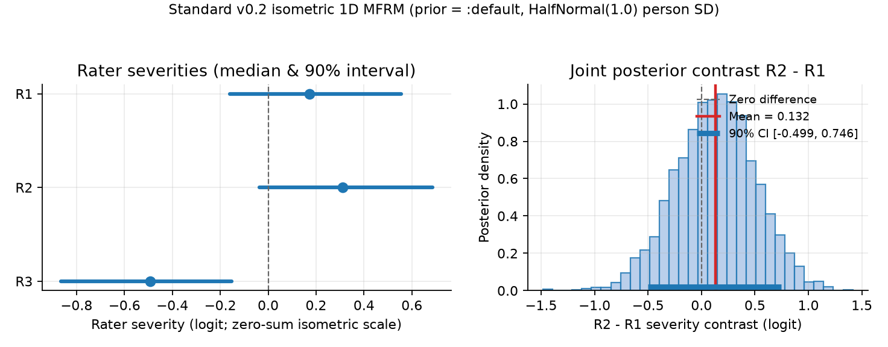
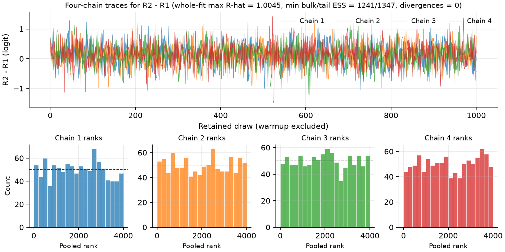
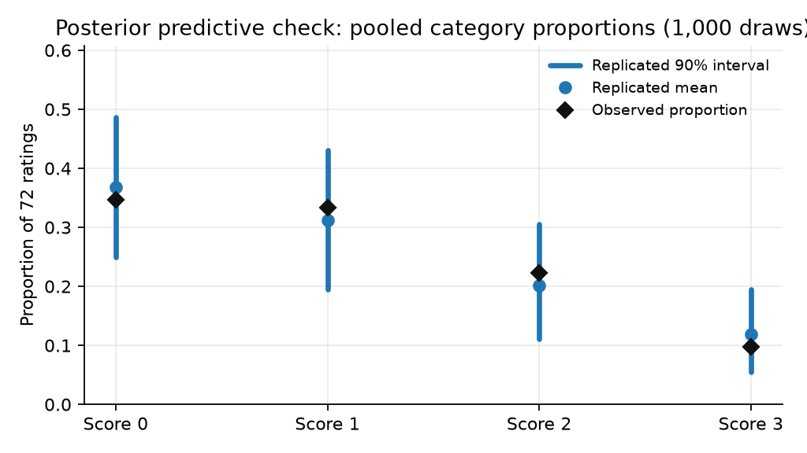

Your First Rating Analysis
Is rater R2 more severe than R1, after accounting for the people and tasks they rated? This walkthrough answers that question using supplied teaching data on the standard 0.2.0-DEV one-dimensional many-facet Rasch model (prior = :default). You can read the figures without installing anything. To run the analysis yourself, complete installation first, then follow the Julia code below.
1. Understand the ratings and standard model
Each row is one person's score on one task from one rater. Here are three rows from the supplied teaching table:
| Person | Item (task) | Rater | Score |
|---|---|---|---|
| P1 | I1 | R1 | 0 |
| P1 | I1 | R2 | 0 |
| P1 | I1 | R3 | 2 |
The complete dataset contains 72 artificial ratings: 12 people, four tasks, three raters, and ordered scores 0–3. Higher scores mean better performance. The raters have overlapping assignments, allowing their severity to be compared. These are teaching data, not evidence about real raters or a recommended sample size.
We use the standard one-dimensional isometric partial-credit MFRM (prior = :default):
- Isometric sum-to-zero facets and steps: Item difficulties, rater severities, and item-specific category steps use orthonormal Helmert sum-to-zero bases with marginal prior SD
1.0for every level. This representation is invariant to the alphabetical order of facet labels and avoids treating an arbitrary first rater (R1) or first item (I1) as a zero-error reference. - Estimated cohort location and person spread: Overall cohort location is absorbed by
population_mean ~ Normal(0, 2.5)and person ability spread by the zero-supporting scale priorresidual_sd[person] ~ HalfNormal(1.0). Estimating both avoids the over-anchored ceiling/floor sign-reversal collapse that arises when both facet references and the person origin are fixed at zero, and substantially reduces rater-contrast overestimation when person spread is small. Mild residual undercoverage can still remain if true person variance is literally zero, so check prior sensitivity when true ability spread may be near zero. - Transparent prior implications: Before fitting, inspect
design_summary(spec).prior_summary. On a zero-sum isometric block of $L$ levels with marginal SD $1.0$, the implied prior SD for any pairwise difference is $\sqrt{2L/(L-1)}$ — here1.732logits for three raters and1.633logits for four items. Always check prior sensitivity when true ability spread may be near zero, scores cluster near the floor or ceiling, or a facet has few levels.
2. Run the analysis
Run this block in Julia using only the top-level BayesianMGMFRM API. The fit call starts estimation: four NUTS chains, each with 1,000 warmup and 1,000 retained draws. To learn from the supplied completed result without computing, skip the block and continue to step 3.
using BayesianMGMFRM
ratings = include(joinpath(pkgdir(BayesianMGMFRM), "examples", "first_analysis_ratings.jl"))
spec = mfrm_spec(
ratings;
person = :person,
score = :score,
facets = (item = :item, rater = :rater),
steps = :item,
category_levels = 0:3,
prior = :default,
)
validation = validate_design(spec)
validation.passed || error("Resolve design errors before fitting: $validation")
design_summary(spec).prior_summary
fitted = fit(spec; chains = 4, warmup = 1000, ndraws = 1000, seed = 2026112401)
qualify(fitted)
contrast(fitted; facet = :rater, left = "R2", right = "R1", interval = 0.90)For a self-contained script that also computes posterior-integrated Infit/Outfit, person reliability, posterior predictive checks, and SHA-256 verified portable handoff persistence, run:
using BayesianMGMFRM
include(joinpath(pkgdir(BayesianMGMFRM), "examples", "first_analysis_v02.jl"))
analysis = FirstMFRMAnalysisV02.main()examples/first_analysis.jl is the ordinary command-line entry for this same implementation. Pass --saved-fit path/to/fit.jls to rebuild reports from a matching trusted native fit without MCMC. This still generates the seeded predictive checks; it does not modify the original saved fit.
To inspect the data, pre-fit validation, prior summary, and sampler settings without running MCMC, call FirstMFRMAnalysisV02.inputs(). For frequentist 1D estimation on the same prior-free design (prior = :none), pass method = :mmle or method = :jmle explicitly to fit (see Frequentist MFRM); generalized and multidimensional models (gmfrm, mgmfrm) use NUTS exclusively.
3. Read the answer
The supplied completed 0.2.0-DEV analysis gives a mean R2−R1 severity contrast of 0.132 logit (posterior median 0.141 logit) and a 90% credible interval of [−0.499, 0.746].

Left: posterior medians (dots) and central 90% credible intervals for all three raters on the zero-sum isometric scale (R1: 0.174 [−0.160, 0.555], R2: 0.310 [−0.037, 0.685], R3: −0.493 [−0.866, −0.151]). Right: joint posterior draws of R2 − R1 directly from contrast(fitted; ...). Every rater has quantified uncertainty without pinning R1 = 0. Download SVG

The 90% interval for R2 − R1 spans zero. These ratings do not clearly establish which rater is more severe under this model and prior. They do not prove equivalence. Logits are model units, not raw score points. Always compute any pairwise comparison directly with contrast(fitted; ...) rather than comparing the overlap of separate rater intervals.
4. Check the computation

Colors identify the four chains. The traces and rank histograms show retained draws for R2 − R1; warmup is excluded. Visual agreement on one contrast does not replace whole-fit qualification.
In the supplied fit (qualify(fitted)), whole-fit checks pass across all estimated coordinates:
- Maximum rank-normalized split-$\hat{R}$:
1.0045(threshold<= 1.01) - Minimum bulk / tail ESS:
1,240.8 / 1,346.8(threshold>= 400) - Retained-draw sampler events:
0divergences,0maximum-treedepth hits (19warmup divergences occurred during adaptation and are reported separately in the complete answer) - Contrast MCSE (
R2 − R1):0.0064logit for the mean and0.0176 / 0.0150logit for the 90% interval endpoints, below this example's illustrative limits of0.01 / 0.02.
If your run fails qualify(fitted), retain the fit for diagnosis and withhold the substantive conclusion. Passing numerical checks verifies computation, not model adequacy.
5. Check fit statistics, reliability, and predictions
Posterior-integrated vs. plug-in Infit and Outfit
Call diagnostics(fitted; kind = :fit_statistics, by = :rater, level = 0.90) to compute posterior-integrated mean-square fit statistics alongside posterior-mean plug-in values:
| Rater | Posterior-integrated Infit (90% CI) | Plug-in Infit | Posterior-integrated Outfit (90% CI) | Plug-in Outfit |
|---|---|---|---|---|
| R1 | 0.895 [0.634, 1.251] | 0.666 | 0.890 [0.634, 1.284] | 0.639 |
| R2 | 0.952 [0.681, 1.376] | 0.745 | 1.077 [0.726, 1.659] | 0.817 |
| R3 | 1.300 [1.009, 1.683] | 1.058 | 1.328 [0.996, 1.774] | 1.024 |
Notice how Bayesian posterior-mean shrinkage pulls plug-in Infit/Outfit below 1.0 (R1 plug-in Infit 0.666 vs. posterior-integrated 0.895). Propagating full posterior uncertainty avoids false overfit flags. Do not treat uncalibrated rules of thumb (such as 0.7–1.3) as automatic rater-exclusion rules.
Person reliability
reliability(fitted; facet = :person, interval = 0.90) separates two distinct quantities:
- Finite-cohort posterior reliability:
0.290(90% CI[0.000, 0.767]) - Population marginal reliability (using the compiled per-draw
residual_sd[person]):0.512(90% CI[0.033, 0.863])
Wide intervals are expected with only 12 people and 6 ratings per person.
Posterior predictive check (PPC)

Black diamonds show observed proportions for scores 0–3 out of 72 ratings (25, 24, 16, 7). Blue dots and bars summarize 1,000 replicated rating tables from predictive_check(fitted; ndraws = 1000, seed = 2026112402, interval = 0.90) (90% replicated count intervals [18, 35], [14, 31], [8, 22], [4, 14]). Download SVG

All four observed proportions fall inside the 90% replicated intervals. This pooled check rules out gross global category-frequency mismatch, but can miss rater-specific misfit or within-event local dependence. Note also that validate_design(spec) flags unused category 3 on tasks I3 and I4; the full declared 0:3 scale is preserved without dropping categories.
6. Keep and reopen the result
Use two distinct persistence layers depending on how long you need to keep the result:
- Short-term native cache (
save_fit/load_fit): Fast Julia serialization tied to the exact same package source, Julia version, andManifest.toml. - Long-term portable handoff (
PortableHandoff): Self-contained, SHA-256-verified JSON preserving joint(chain, iteration, parameter)draws, original facet ID dictionaries, effective constraints, and qualification metadata across environments and languages (including R viaread_handoff_mgmfrm()).
# Short-term cache (same Julia environment):
save_fit("my_fit.jls", fitted)
reopened = load_fit("my_fit.jls")
# Portable SHA-256 verified JSON handoff:
handoff = BayesianMGMFRM.PortableHandoff.export_handoff(fitted)
BayesianMGMFRM.PortableHandoff.save_handoff("my_handoff.json", handoff)
verified = BayesianMGMFRM.PortableHandoff.load_handoff("my_handoff.json")Inspect the supplied complete text summary and verified portable handoff receipt bundled with this walkthrough (FirstMFRMAnalysisV02.main() writes and verifies the full handoff.json in your local output folder).
Recommended standard specification for your own unanchored ratings
The walkthrough above already uses the recommended standard 0.2.0-DEV specification (prior = :default) for unanchored 1D ratings. To adapt it to your own CSV table, continue with reading and validating your rating table and choosing and checking priors.
Legacy reference-coded (R1 = 0, I1 = 0) walkthrough note
Earlier 0.1.x documentation used a reference-coded FacetData + BayesianMGMFRM.Legacy.MFRMPrior walkthrough (R1 = 0, I1 = 0, fixed person SD 1.5, mean R2 − R1 = 0.166 logit, 90% CI [−0.495, 0.840]). That script (examples/legacy/first_analysis.jl) and its hash-verified figure bundle (examples/first_analysis_figures.jl, assets/first-analysis/) remain available solely for backward-compatibility checks and historical archive verification. Do not use fixed first-level references with a fixed zero person origin for new unanchored studies.